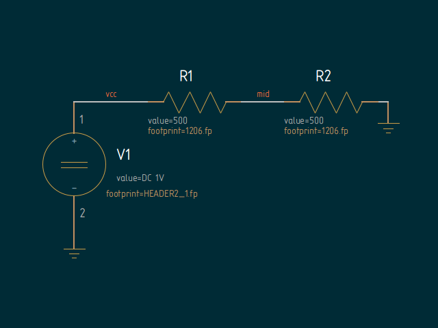

Schematics
test-netlist-simple
simple schematic for testing
lepton-netlist(1)
[ download ]
- archive contains simple.sch and simple.symembedded.sch (with embedded symbols)
simple.sch:

test-netlist-hier
simple hierarchical set of schematics for testing
lepton-netlist(1)
[ download ]
- archive created with
lepton-archive(1)
schematic-main.sch:

schematic-subcircuit.sch:

project hierarchy:

files:
schematic-main.sch
schematic-subcircuit.sch
symbol-subcircuit.sym
gafrc [ download ]
geda.conf
symbol-gnd.sym
symbol-in.sym
symbol-resistor.sym
symbol-vdc.sym